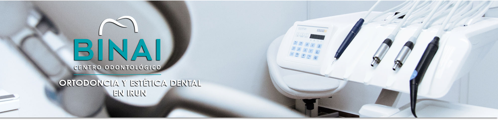

Dentistas cualificados
en Irun
En Clínica dental Binai encontrarás las mejores soluciones en el tratamiento de tus dientes.
Tu clínica en Irun
Tecnología de vanguardia, a un paso de casa
Ubicados en un moderno centro odontológico, Clínica dental Binai está equipada con tecnología de vanguardia, con la que brindarte las soluciones más efectivas para tu salud dental. Ven a visitarnos y descubre por que Clínica Dental Binai es la mejor opción para tu salud bucal en Irun.
Contacto
Hablemos
Dirección
José Eguino, 2 - 1ºA
(junto al Ambulatorio de Elitxu)
20302 Irun (Gipuzkoa)
Horario
Horario| Lunes | 8:30–13:30 · 15:00–20:00 |
|---|---|
| Martes | 8:30–13:30 · 15:00–20:00 |
| Miércoles | 8:30–13:30 · 15:00–20:00 |
| Jueves | 8:30–13:30 · 15:00–20:00 |
| Viernes | 8:30–13:30 · 15:00–20:00 |
| Sábado | 9:00–14:00 |
| Domingo | Cerrado |
Así es Binai
Un vistazo a tu clínica dental en Irun


Cómo llegar
Nos encontrarás junto al ambulatorio de Elitxu
Ven a visitarnos
Te esperamos en Irun. Presupuesto y radiografía gratis, sin compromiso.